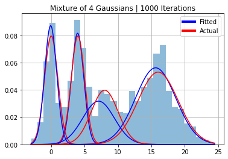

Playground for unknown µ, σ
Playground for unknown µ, σ¶
import numpy as np
import matplotlib.pyplot as plt
from matplotlib.lines import Line2D
from scipy.stats import norm
from sklearn.metrics import rand_score, adjusted_rand_score, silhouette_score
from utils import proportion
from gibbs_sampler import gibbs, multigibbs_gibbs, data_gen, make_param_dict, pred_label, score
# from matplotlib.pyplot import figure
plt.rcParams["figure.figsize"] = [10,6]
np.random.seed(30)
# mu = [0,4,8,16]
# sigmas = [1,1,2,3]
# phi = [.2,.2,.2,.4]
k = 4
mu = np.random.uniform(low=-50, high=50, size=k)
sigmas = np.random.uniform(low=0.1, high=10, size=k)
phi = proportion(k=k, n=100)
n = 1000
y, class_list = data_gen(mu=mu, sigmas=sigmas, phi=phi, n=n)
x = np.linspace(min(y),max(y), 500)
# Create Plot of Data
plt.hist(y, 30, density=True, alpha=0.5);
for i in range(k):
plt.plot(x, norm(mu[i], sigmas[i]).pdf(x) * phi[i])
plt.title(f"Mixture of {k} Gaussians Data")
plt.grid()

N_itter = 2000
burnin = 500
[mu_est, sigma_est, phi_est, z_est, trace] = gibbs(y, N_itter, burnin, k=k)
0%| | 0/2000 [00:00<?, ?it/s]
0%| | 5/2000 [00:00<00:41, 48.45it/s]
1%| | 17/2000 [00:00<00:22, 86.79it/s]
1%|▏ | 29/2000 [00:00<00:19, 98.81it/s]
2%|▏ | 41/2000 [00:00<00:18, 104.23it/s]
3%|▎ | 53/2000 [00:00<00:18, 107.54it/s]
3%|▎ | 65/2000 [00:00<00:17, 108.87it/s]
4%|▍ | 77/2000 [00:00<00:17, 109.81it/s]
4%|▍ | 88/2000 [00:00<00:17, 109.27it/s]
5%|▌ | 100/2000 [00:00<00:17, 110.61it/s]
6%|▌ | 112/2000 [00:01<00:16, 111.26it/s]
6%|▌ | 124/2000 [00:01<00:16, 111.23it/s]
7%|▋ | 136/2000 [00:01<00:16, 112.18it/s]
7%|▋ | 148/2000 [00:01<00:16, 112.27it/s]
8%|▊ | 160/2000 [00:01<00:16, 112.37it/s]
9%|▊ | 172/2000 [00:01<00:16, 112.01it/s]
9%|▉ | 184/2000 [00:01<00:16, 111.48it/s]
10%|▉ | 196/2000 [00:01<00:16, 111.97it/s]
10%|█ | 208/2000 [00:01<00:16, 111.98it/s]
11%|█ | 220/2000 [00:02<00:16, 110.29it/s]
12%|█▏ | 232/2000 [00:02<00:15, 110.59it/s]
12%|█▏ | 244/2000 [00:02<00:15, 111.20it/s]
13%|█▎ | 256/2000 [00:02<00:15, 111.61it/s]
13%|█▎ | 268/2000 [00:02<00:15, 111.83it/s]
14%|█▍ | 280/2000 [00:02<00:15, 111.97it/s]
15%|█▍ | 292/2000 [00:02<00:15, 110.76it/s]
15%|█▌ | 304/2000 [00:02<00:15, 110.88it/s]
16%|█▌ | 316/2000 [00:02<00:15, 111.28it/s]
16%|█▋ | 328/2000 [00:02<00:14, 111.56it/s]
17%|█▋ | 340/2000 [00:03<00:14, 112.05it/s]
18%|█▊ | 352/2000 [00:03<00:14, 112.56it/s]
18%|█▊ | 364/2000 [00:03<00:14, 112.60it/s]
19%|█▉ | 376/2000 [00:03<00:14, 112.76it/s]
19%|█▉ | 388/2000 [00:03<00:14, 112.93it/s]
20%|██ | 400/2000 [00:03<00:14, 112.71it/s]
21%|██ | 412/2000 [00:03<00:14, 112.70it/s]
21%|██ | 424/2000 [00:03<00:13, 112.91it/s]
22%|██▏ | 436/2000 [00:03<00:13, 112.94it/s]
22%|██▏ | 448/2000 [00:04<00:13, 113.11it/s]
23%|██▎ | 460/2000 [00:04<00:13, 111.46it/s]
24%|██▎ | 472/2000 [00:04<00:14, 108.93it/s]
24%|██▍ | 483/2000 [00:04<00:13, 108.41it/s]
25%|██▍ | 494/2000 [00:04<00:13, 108.55it/s]
25%|██▌ | 505/2000 [00:04<00:13, 107.77it/s]
26%|██▌ | 516/2000 [00:04<00:13, 107.37it/s]
26%|██▋ | 528/2000 [00:04<00:13, 108.20it/s]
27%|██▋ | 540/2000 [00:04<00:13, 109.44it/s]
28%|██▊ | 552/2000 [00:05<00:13, 109.93it/s]
28%|██▊ | 564/2000 [00:05<00:12, 111.09it/s]
29%|██▉ | 576/2000 [00:05<00:12, 111.56it/s]
29%|██▉ | 588/2000 [00:05<00:12, 111.30it/s]
30%|███ | 600/2000 [00:05<00:12, 110.97it/s]
31%|███ | 612/2000 [00:05<00:12, 111.35it/s]
31%|███ | 624/2000 [00:05<00:12, 110.99it/s]
32%|███▏ | 636/2000 [00:05<00:12, 110.97it/s]
32%|███▏ | 648/2000 [00:05<00:12, 110.48it/s]
33%|███▎ | 660/2000 [00:05<00:12, 110.86it/s]
34%|███▎ | 672/2000 [00:06<00:11, 110.84it/s]
34%|███▍ | 684/2000 [00:06<00:11, 111.09it/s]
35%|███▍ | 696/2000 [00:06<00:11, 111.28it/s]
35%|███▌ | 708/2000 [00:06<00:11, 111.92it/s]
36%|███▌ | 720/2000 [00:06<00:11, 112.40it/s]
37%|███▋ | 732/2000 [00:06<00:11, 112.61it/s]
37%|███▋ | 744/2000 [00:06<00:11, 112.73it/s]
38%|███▊ | 756/2000 [00:06<00:11, 112.38it/s]
38%|███▊ | 768/2000 [00:06<00:10, 112.62it/s]
39%|███▉ | 780/2000 [00:07<00:10, 112.31it/s]
40%|███▉ | 792/2000 [00:07<00:10, 112.37it/s]
40%|████ | 804/2000 [00:07<00:10, 112.39it/s]
41%|████ | 816/2000 [00:07<00:10, 112.92it/s]
41%|████▏ | 828/2000 [00:07<00:10, 112.90it/s]
42%|████▏ | 840/2000 [00:07<00:10, 112.30it/s]
43%|████▎ | 852/2000 [00:07<00:10, 111.39it/s]
43%|████▎ | 864/2000 [00:07<00:10, 111.70it/s]
44%|████▍ | 876/2000 [00:07<00:10, 112.09it/s]
44%|████▍ | 888/2000 [00:08<00:09, 112.24it/s]
45%|████▌ | 900/2000 [00:08<00:09, 112.34it/s]
46%|████▌ | 912/2000 [00:08<00:09, 112.63it/s]
46%|████▌ | 924/2000 [00:08<00:09, 113.04it/s]
47%|████▋ | 936/2000 [00:08<00:09, 113.21it/s]
47%|████▋ | 948/2000 [00:08<00:09, 113.29it/s]
48%|████▊ | 960/2000 [00:08<00:09, 113.04it/s]
49%|████▊ | 972/2000 [00:08<00:09, 112.15it/s]
49%|████▉ | 984/2000 [00:08<00:09, 112.21it/s]
50%|████▉ | 996/2000 [00:08<00:08, 112.46it/s]
50%|█████ | 1008/2000 [00:09<00:08, 112.95it/s]
51%|█████ | 1020/2000 [00:09<00:08, 113.01it/s]
52%|█████▏ | 1032/2000 [00:09<00:08, 113.34it/s]
52%|█████▏ | 1044/2000 [00:09<00:08, 112.67it/s]
53%|█████▎ | 1056/2000 [00:09<00:08, 112.58it/s]
53%|█████▎ | 1068/2000 [00:09<00:08, 112.44it/s]
54%|█████▍ | 1080/2000 [00:09<00:08, 112.69it/s]
55%|█████▍ | 1092/2000 [00:09<00:08, 112.67it/s]
55%|█████▌ | 1104/2000 [00:09<00:07, 112.85it/s]
56%|█████▌ | 1116/2000 [00:10<00:07, 112.85it/s]
56%|█████▋ | 1128/2000 [00:10<00:07, 113.32it/s]
57%|█████▋ | 1140/2000 [00:10<00:07, 113.57it/s]
58%|█████▊ | 1152/2000 [00:10<00:07, 113.58it/s]
58%|█████▊ | 1164/2000 [00:10<00:07, 113.32it/s]
59%|█████▉ | 1176/2000 [00:10<00:07, 113.40it/s]
59%|█████▉ | 1188/2000 [00:10<00:07, 113.92it/s]
60%|██████ | 1200/2000 [00:10<00:07, 113.63it/s]
61%|██████ | 1212/2000 [00:10<00:06, 113.50it/s]
61%|██████ | 1224/2000 [00:10<00:06, 113.57it/s]
62%|██████▏ | 1236/2000 [00:11<00:06, 113.45it/s]
62%|██████▏ | 1248/2000 [00:11<00:06, 112.58it/s]
63%|██████▎ | 1260/2000 [00:11<00:06, 113.00it/s]
64%|██████▎ | 1272/2000 [00:11<00:06, 113.11it/s]
64%|██████▍ | 1284/2000 [00:11<00:06, 113.49it/s]
65%|██████▍ | 1296/2000 [00:11<00:06, 113.27it/s]
65%|██████▌ | 1308/2000 [00:11<00:06, 113.42it/s]
66%|██████▌ | 1320/2000 [00:11<00:06, 113.29it/s]
67%|██████▋ | 1332/2000 [00:11<00:05, 112.98it/s]
67%|██████▋ | 1344/2000 [00:12<00:05, 111.97it/s]
68%|██████▊ | 1356/2000 [00:12<00:05, 112.35it/s]
68%|██████▊ | 1368/2000 [00:12<00:05, 112.91it/s]
69%|██████▉ | 1380/2000 [00:12<00:05, 113.01it/s]
70%|██████▉ | 1392/2000 [00:12<00:05, 113.35it/s]
70%|███████ | 1404/2000 [00:12<00:05, 113.64it/s]
71%|███████ | 1416/2000 [00:12<00:05, 113.14it/s]
71%|███████▏ | 1428/2000 [00:12<00:05, 112.89it/s]
72%|███████▏ | 1440/2000 [00:12<00:04, 113.14it/s]
73%|███████▎ | 1452/2000 [00:13<00:04, 113.48it/s]
73%|███████▎ | 1464/2000 [00:13<00:04, 113.57it/s]
74%|███████▍ | 1476/2000 [00:13<00:04, 113.52it/s]
74%|███████▍ | 1488/2000 [00:13<00:04, 113.54it/s]
75%|███████▌ | 1500/2000 [00:13<00:04, 113.19it/s]
76%|███████▌ | 1512/2000 [00:13<00:04, 112.89it/s]
76%|███████▌ | 1524/2000 [00:13<00:04, 112.42it/s]
77%|███████▋ | 1536/2000 [00:13<00:04, 112.24it/s]
77%|███████▋ | 1548/2000 [00:13<00:04, 112.31it/s]
78%|███████▊ | 1560/2000 [00:13<00:03, 112.69it/s]
79%|███████▊ | 1572/2000 [00:14<00:03, 113.01it/s]
79%|███████▉ | 1584/2000 [00:14<00:03, 112.74it/s]
80%|███████▉ | 1596/2000 [00:14<00:03, 112.86it/s]
80%|████████ | 1608/2000 [00:14<00:03, 112.59it/s]
81%|████████ | 1620/2000 [00:14<00:03, 112.79it/s]
82%|████████▏ | 1632/2000 [00:14<00:03, 112.97it/s]
82%|████████▏ | 1644/2000 [00:14<00:03, 112.58it/s]
83%|████████▎ | 1656/2000 [00:14<00:03, 112.55it/s]
83%|████████▎ | 1668/2000 [00:14<00:02, 112.94it/s]
84%|████████▍ | 1680/2000 [00:15<00:02, 112.35it/s]
85%|████████▍ | 1692/2000 [00:15<00:02, 112.49it/s]
85%|████████▌ | 1704/2000 [00:15<00:02, 112.64it/s]
86%|████████▌ | 1716/2000 [00:15<00:02, 112.77it/s]
86%|████████▋ | 1728/2000 [00:15<00:02, 113.10it/s]
87%|████████▋ | 1740/2000 [00:15<00:02, 112.78it/s]
88%|████████▊ | 1752/2000 [00:15<00:02, 112.88it/s]
88%|████████▊ | 1764/2000 [00:15<00:02, 113.10it/s]
89%|████████▉ | 1776/2000 [00:15<00:01, 113.04it/s]
89%|████████▉ | 1788/2000 [00:15<00:01, 112.88it/s]
90%|█████████ | 1800/2000 [00:16<00:01, 113.34it/s]
91%|█████████ | 1812/2000 [00:16<00:01, 113.60it/s]
91%|█████████ | 1824/2000 [00:16<00:01, 113.30it/s]
92%|█████████▏| 1836/2000 [00:16<00:01, 113.27it/s]
92%|█████████▏| 1848/2000 [00:16<00:01, 113.48it/s]
93%|█████████▎| 1860/2000 [00:16<00:01, 113.13it/s]
94%|█████████▎| 1872/2000 [00:16<00:01, 113.11it/s]
94%|█████████▍| 1884/2000 [00:16<00:01, 112.60it/s]
95%|█████████▍| 1896/2000 [00:16<00:00, 113.25it/s]
95%|█████████▌| 1908/2000 [00:17<00:00, 113.25it/s]
96%|█████████▌| 1920/2000 [00:17<00:00, 113.50it/s]
97%|█████████▋| 1932/2000 [00:17<00:00, 113.11it/s]
97%|█████████▋| 1944/2000 [00:17<00:00, 113.13it/s]
98%|█████████▊| 1956/2000 [00:17<00:00, 113.11it/s]
98%|█████████▊| 1968/2000 [00:17<00:00, 112.79it/s]
99%|█████████▉| 1980/2000 [00:17<00:00, 111.95it/s]
100%|█████████▉| 1992/2000 [00:17<00:00, 112.09it/s]
100%|██████████| 2000/2000 [00:17<00:00, 111.97it/s]
params_dict = make_param_dict(trace=trace)
x = np.linspace(min(y), max(y),500)
plt.hist(y, 30, density=True, alpha=0.5);
for i in range(k):
plt.plot(x, norm(mu[i], sigmas[i]).pdf(x)*phi[i], color="red")
plt.plot(x, norm(mu_est[i], sigma_est[i]).pdf(x)*phi_est[0][i], color="blue")
plt.title(f"Mixture of 4 Gaussians | {N_itter} Iterations")
legend_elements = [
Line2D([0], [0], color='blue', lw=4, label='Fitted'),
Line2D([0], [0], color='red', lw=4, label='Actual')
]
plt.legend(handles=legend_elements, loc="upper right")
plt.grid()
plt.savefig("end_param.png")

x = np.linspace(min(y), max(y),500)
plt.hist(y, 30, density=True, alpha=0.5);
for i in range(k):
plt.plot(x, norm(mu[i], sigmas[i]).pdf(x)*phi[i], color="red")
plt.plot(x, norm(params_dict[f"mu{i}"], params_dict[f"sigma{i}"]).pdf(x)*phi_est[0][i], color="blue")
plt.title(f"Mixture of 4 Gaussians | {n} Iterations")
legend_elements = [
Line2D([0], [0], color='blue', lw=4, label='Fitted'),
Line2D([0], [0], color='red', lw=4, label='Actual')
]
plt.legend(handles=legend_elements, loc="upper right")
plt.grid()
plt.savefig("mean_param.png")

z_est_mean = pred_label(data=y, params_dict=params_dict)
best_model = multigibbs_gibbs(y, k, N_itter, burnin)
# Gibbsampler with multiple initialisation
multi_z_est = best_model[-2]
# Gibbs with burnin and multiple initialisation
multi_trace = best_model[-1]
multi_param_dict = make_param_dict(trace=multi_trace)
multi_z_est_mean = pred_label(data=y, params_dict=params_dict)
0%| | 0/2000 [00:00<?, ?it/s]
0%| | 0/2000 [00:00<?, ?it/s]
1%| | 11/2000 [00:00<00:18, 107.84it/s]
1%| | 11/2000 [00:00<00:18, 109.19it/s]
1%| | 23/2000 [00:00<00:18, 109.81it/s]
1%| | 22/2000 [00:00<00:18, 105.72it/s]
2%|▏ | 34/2000 [00:00<00:18, 108.91it/s]
2%|▏ | 33/2000 [00:00<00:18, 105.66it/s]
2%|▏ | 45/2000 [00:00<00:18, 107.75it/s]
2%|▏ | 44/2000 [00:00<00:18, 106.13it/s]
3%|▎ | 56/2000 [00:00<00:18, 107.00it/s]
3%|▎ | 55/2000 [00:00<00:18, 105.37it/s]
3%|▎ | 67/2000 [00:00<00:18, 106.35it/s]
3%|▎ | 66/2000 [00:00<00:18, 103.72it/s]
4%|▍ | 78/2000 [00:00<00:17, 107.08it/s]
4%|▍ | 77/2000 [00:00<00:18, 104.81it/s]
4%|▍ | 90/2000 [00:00<00:17, 108.34it/s]
4%|▍ | 89/2000 [00:00<00:17, 106.65it/s]
5%|▌ | 101/2000 [00:00<00:17, 108.42it/s]
5%|▌ | 100/2000 [00:00<00:17, 106.95it/s]
6%|▌ | 112/2000 [00:01<00:17, 108.69it/s]
6%|▌ | 111/2000 [00:01<00:17, 107.39it/s]
6%|▌ | 123/2000 [00:01<00:17, 109.05it/s]
6%|▌ | 122/2000 [00:01<00:17, 107.11it/s]
7%|▋ | 135/2000 [00:01<00:16, 109.76it/s]
7%|▋ | 133/2000 [00:01<00:17, 106.35it/s]
7%|▋ | 147/2000 [00:01<00:16, 110.25it/s]
7%|▋ | 145/2000 [00:01<00:17, 107.73it/s]
8%|▊ | 159/2000 [00:01<00:16, 110.22it/s]
8%|▊ | 157/2000 [00:01<00:16, 108.80it/s]
9%|▊ | 171/2000 [00:01<00:16, 110.27it/s]
8%|▊ | 169/2000 [00:01<00:16, 109.72it/s]
9%|▉ | 183/2000 [00:01<00:16, 109.71it/s]
9%|▉ | 180/2000 [00:01<00:16, 109.62it/s]
10%|▉ | 194/2000 [00:01<00:16, 109.08it/s]
10%|▉ | 191/2000 [00:01<00:16, 109.09it/s]
10%|█ | 202/2000 [00:01<00:16, 109.13it/s]
10%|█ | 206/2000 [00:01<00:16, 109.52it/s]
11%|█ | 213/2000 [00:01<00:16, 108.39it/s]
11%|█ | 218/2000 [00:01<00:16, 110.23it/s]
11%|█ | 224/2000 [00:02<00:16, 108.80it/s]
12%|█▏ | 230/2000 [00:02<00:16, 109.47it/s]
12%|█▏ | 235/2000 [00:02<00:16, 106.89it/s]
12%|█▏ | 242/2000 [00:02<00:15, 110.68it/s]
12%|█▏ | 246/2000 [00:02<00:16, 106.75it/s]
13%|█▎ | 254/2000 [00:02<00:15, 109.68it/s]
13%|█▎ | 257/2000 [00:02<00:16, 107.64it/s]
13%|█▎ | 265/2000 [00:02<00:15, 109.55it/s]
13%|█▎ | 269/2000 [00:02<00:15, 109.05it/s]
14%|█▍ | 276/2000 [00:02<00:15, 108.59it/s]
14%|█▍ | 281/2000 [00:02<00:15, 110.06it/s]
14%|█▍ | 287/2000 [00:02<00:15, 108.85it/s]
15%|█▍ | 293/2000 [00:02<00:15, 110.49it/s]
15%|█▍ | 298/2000 [00:02<00:15, 108.04it/s]
15%|█▌ | 305/2000 [00:02<00:15, 110.48it/s]
15%|█▌ | 309/2000 [00:02<00:15, 106.28it/s]
16%|█▌ | 317/2000 [00:02<00:15, 111.41it/s]
16%|█▌ | 320/2000 [00:02<00:15, 107.16it/s]
16%|█▋ | 329/2000 [00:03<00:14, 111.71it/s]
17%|█▋ | 331/2000 [00:03<00:15, 107.80it/s]
17%|█▋ | 342/2000 [00:03<00:15, 107.72it/s]
17%|█▋ | 341/2000 [00:03<00:14, 110.81it/s]
18%|█▊ | 353/2000 [00:03<00:15, 107.99it/s]
18%|█▊ | 353/2000 [00:03<00:14, 111.21it/s]
18%|█▊ | 365/2000 [00:03<00:15, 108.93it/s]
18%|█▊ | 365/2000 [00:03<00:14, 111.95it/s]
19%|█▉ | 376/2000 [00:03<00:14, 109.08it/s]
19%|█▉ | 377/2000 [00:03<00:14, 112.39it/s]
19%|█▉ | 387/2000 [00:03<00:14, 109.03it/s]
19%|█▉ | 389/2000 [00:03<00:14, 111.72it/s]
20%|█▉ | 398/2000 [00:03<00:14, 108.80it/s]
20%|██ | 401/2000 [00:03<00:14, 111.67it/s]
20%|██ | 409/2000 [00:03<00:14, 108.88it/s]
21%|██ | 413/2000 [00:03<00:14, 111.30it/s]
21%|██ | 420/2000 [00:03<00:14, 108.25it/s]
21%|██▏ | 425/2000 [00:03<00:14, 110.94it/s]
22%|██▏ | 431/2000 [00:03<00:14, 108.32it/s]
22%|██▏ | 437/2000 [00:04<00:14, 110.38it/s]
22%|██▏ | 442/2000 [00:04<00:14, 108.40it/s]
22%|██▏ | 449/2000 [00:04<00:14, 110.24it/s]
23%|██▎ | 453/2000 [00:04<00:14, 108.57it/s]
23%|██▎ | 461/2000 [00:04<00:13, 110.87it/s]
23%|██▎ | 464/2000 [00:04<00:14, 108.68it/s]
24%|██▎ | 473/2000 [00:04<00:13, 110.76it/s]
24%|██▍ | 475/2000 [00:04<00:13, 108.99it/s]
24%|██▍ | 485/2000 [00:04<00:13, 111.05it/s]
24%|██▍ | 486/2000 [00:04<00:13, 108.98it/s]
25%|██▍ | 497/2000 [00:04<00:13, 111.34it/s]
25%|██▍ | 498/2000 [00:04<00:13, 109.83it/s]
25%|██▌ | 509/2000 [00:04<00:13, 108.55it/s]
26%|██▌ | 510/2000 [00:04<00:13, 110.58it/s]
26%|██▌ | 520/2000 [00:04<00:13, 108.53it/s]
26%|██▌ | 522/2000 [00:04<00:13, 111.26it/s]
27%|██▋ | 531/2000 [00:04<00:13, 108.69it/s]
27%|██▋ | 534/2000 [00:04<00:13, 111.91it/s]
27%|██▋ | 542/2000 [00:04<00:13, 108.32it/s]
27%|██▋ | 546/2000 [00:05<00:12, 112.51it/s]
28%|██▊ | 553/2000 [00:05<00:13, 108.53it/s]
28%|██▊ | 558/2000 [00:05<00:12, 112.03it/s]
28%|██▊ | 564/2000 [00:05<00:13, 108.62it/s]
28%|██▊ | 570/2000 [00:05<00:12, 111.97it/s]
29%|██▉ | 575/2000 [00:05<00:13, 107.53it/s]
29%|██▉ | 582/2000 [00:05<00:12, 110.88it/s]
29%|██▉ | 586/2000 [00:05<00:13, 108.14it/s]
30%|██▉ | 594/2000 [00:05<00:12, 109.38it/s]
30%|██▉ | 598/2000 [00:05<00:12, 109.03it/s]
30%|███ | 605/2000 [00:05<00:12, 109.54it/s]
30%|███ | 610/2000 [00:05<00:12, 109.48it/s]
31%|███ | 616/2000 [00:05<00:12, 108.83it/s]
31%|███ | 622/2000 [00:05<00:12, 110.09it/s]
31%|███▏ | 627/2000 [00:05<00:12, 108.94it/s]
32%|███▏ | 634/2000 [00:05<00:12, 110.21it/s]
32%|███▏ | 638/2000 [00:05<00:12, 109.22it/s]
32%|███▏ | 646/2000 [00:05<00:12, 109.61it/s]
32%|███▏ | 649/2000 [00:05<00:12, 108.82it/s]
33%|███▎ | 657/2000 [00:06<00:12, 108.87it/s]
33%|███▎ | 660/2000 [00:06<00:12, 107.62it/s]
33%|███▎ | 668/2000 [00:06<00:12, 109.02it/s]
34%|███▎ | 671/2000 [00:06<00:12, 107.97it/s]
34%|███▍ | 680/2000 [00:06<00:12, 109.77it/s]
34%|███▍ | 682/2000 [00:06<00:12, 107.33it/s]
35%|███▍ | 692/2000 [00:06<00:11, 110.57it/s]
35%|███▍ | 694/2000 [00:06<00:12, 108.48it/s]
35%|███▌ | 704/2000 [00:06<00:11, 110.97it/s]
35%|███▌ | 706/2000 [00:06<00:11, 109.08it/s]
36%|███▌ | 716/2000 [00:06<00:11, 110.64it/s]
36%|███▌ | 717/2000 [00:06<00:11, 109.05it/s]
36%|███▋ | 728/2000 [00:06<00:11, 110.92it/s]
36%|███▋ | 728/2000 [00:06<00:11, 109.29it/s]
37%|███▋ | 739/2000 [00:06<00:11, 108.60it/s]
37%|███▋ | 740/2000 [00:06<00:11, 109.60it/s]
38%|███▊ | 750/2000 [00:06<00:11, 108.00it/s]
38%|███▊ | 751/2000 [00:06<00:11, 107.78it/s]
38%|███▊ | 762/2000 [00:06<00:11, 109.09it/s]
38%|███▊ | 763/2000 [00:06<00:11, 108.24it/s]
39%|███▊ | 773/2000 [00:07<00:11, 108.81it/s]
39%|███▊ | 774/2000 [00:07<00:11, 107.91it/s]
39%|███▉ | 784/2000 [00:07<00:11, 108.35it/s]
39%|███▉ | 785/2000 [00:07<00:11, 107.91it/s]
40%|███▉ | 796/2000 [00:07<00:10, 109.50it/s]
40%|███▉ | 797/2000 [00:07<00:11, 108.50it/s]
40%|████ | 808/2000 [00:07<00:10, 110.11it/s]
40%|████ | 809/2000 [00:07<00:10, 109.24it/s]
41%|████ | 820/2000 [00:07<00:10, 110.32it/s]
41%|████ | 821/2000 [00:07<00:10, 109.63it/s]
42%|████▏ | 832/2000 [00:07<00:10, 110.59it/s]
42%|████▏ | 833/2000 [00:07<00:10, 109.75it/s]
42%|████▏ | 844/2000 [00:07<00:10, 108.96it/s]
42%|████▏ | 844/2000 [00:07<00:10, 109.65it/s]
43%|████▎ | 855/2000 [00:07<00:10, 108.37it/s]
43%|████▎ | 856/2000 [00:07<00:10, 109.61it/s]
43%|████▎ | 866/2000 [00:07<00:10, 108.48it/s]
43%|████▎ | 867/2000 [00:07<00:10, 109.35it/s]
44%|████▍ | 877/2000 [00:08<00:10, 108.23it/s]
44%|████▍ | 879/2000 [00:08<00:10, 109.78it/s]
44%|████▍ | 888/2000 [00:08<00:10, 105.97it/s]
44%|████▍ | 890/2000 [00:08<00:10, 107.65it/s]
45%|████▌ | 901/2000 [00:08<00:10, 108.20it/s]
45%|████▌ | 900/2000 [00:08<00:10, 107.42it/s]
46%|████▌ | 912/2000 [00:08<00:10, 108.42it/s]
46%|████▌ | 911/2000 [00:08<00:10, 106.47it/s]
46%|████▌ | 923/2000 [00:08<00:09, 108.54it/s]
46%|████▌ | 922/2000 [00:08<00:10, 106.99it/s]
47%|████▋ | 935/2000 [00:08<00:09, 109.85it/s]
47%|████▋ | 934/2000 [00:08<00:09, 107.58it/s]
47%|████▋ | 946/2000 [00:08<00:09, 109.30it/s]
47%|████▋ | 945/2000 [00:08<00:09, 107.03it/s]
48%|████▊ | 957/2000 [00:08<00:09, 109.12it/s]
48%|████▊ | 956/2000 [00:08<00:09, 104.90it/s]
48%|████▊ | 968/2000 [00:08<00:09, 108.62it/s]
48%|████▊ | 967/2000 [00:08<00:09, 105.55it/s]
49%|████▉ | 980/2000 [00:08<00:09, 109.23it/s]
49%|████▉ | 978/2000 [00:08<00:09, 106.14it/s]
50%|████▉ | 991/2000 [00:09<00:09, 109.37it/s]
49%|████▉ | 989/2000 [00:09<00:09, 106.45it/s]
50%|█████ | 1002/2000 [00:09<00:09, 106.56it/s]
50%|█████ | 1000/2000 [00:09<00:09, 105.97it/s]
51%|█████ | 1013/2000 [00:09<00:09, 107.09it/s]
51%|█████ | 1011/2000 [00:09<00:09, 105.96it/s]
51%|█████▏ | 1025/2000 [00:09<00:08, 108.35it/s]
51%|█████ | 1022/2000 [00:09<00:09, 106.42it/s]
52%|█████▏ | 1036/2000 [00:09<00:08, 107.78it/s]
52%|█████▏ | 1033/2000 [00:09<00:09, 104.92it/s]
52%|█████▏ | 1048/2000 [00:09<00:08, 108.86it/s]
52%|█████▏ | 1044/2000 [00:09<00:09, 105.36it/s]
53%|█████▎ | 1059/2000 [00:09<00:08, 109.16it/s]
53%|█████▎ | 1055/2000 [00:09<00:08, 105.52it/s]
54%|█████▎ | 1070/2000 [00:09<00:08, 109.04it/s]
53%|█████▎ | 1066/2000 [00:09<00:08, 105.09it/s]
54%|█████▍ | 1081/2000 [00:09<00:08, 109.07it/s]
54%|█████▍ | 1077/2000 [00:09<00:08, 105.08it/s]
55%|█████▍ | 1092/2000 [00:10<00:08, 108.48it/s]
54%|█████▍ | 1088/2000 [00:10<00:08, 105.59it/s]
55%|█████▌ | 1103/2000 [00:10<00:08, 108.43it/s]
55%|█████▍ | 1099/2000 [00:10<00:08, 105.71it/s]
56%|█████▌ | 1114/2000 [00:10<00:08, 108.19it/s]
56%|█████▌ | 1110/2000 [00:10<00:08, 106.02it/s]
56%|█████▋ | 1125/2000 [00:10<00:08, 108.26it/s]
56%|█████▌ | 1121/2000 [00:10<00:08, 105.81it/s]
57%|█████▋ | 1136/2000 [00:10<00:08, 107.87it/s]
57%|█████▋ | 1132/2000 [00:10<00:08, 106.38it/s]
57%|█████▋ | 1148/2000 [00:10<00:07, 108.85it/s]
57%|█████▋ | 1143/2000 [00:10<00:08, 106.55it/s]
58%|█████▊ | 1160/2000 [00:10<00:07, 109.28it/s]
58%|█████▊ | 1154/2000 [00:10<00:07, 106.79it/s]
59%|█████▊ | 1172/2000 [00:10<00:07, 109.74it/s]
58%|█████▊ | 1165/2000 [00:10<00:07, 106.58it/s]
59%|█████▉ | 1183/2000 [00:10<00:07, 109.36it/s]
59%|█████▉ | 1176/2000 [00:10<00:07, 107.22it/s]
60%|█████▉ | 1195/2000 [00:10<00:07, 109.70it/s]
59%|█████▉ | 1188/2000 [00:10<00:07, 107.90it/s]
60%|██████ | 1207/2000 [00:11<00:07, 109.94it/s]
60%|█████▉ | 1199/2000 [00:11<00:07, 108.02it/s]
60%|██████ | 1210/2000 [00:11<00:07, 108.45it/s]
61%|██████ | 1219/2000 [00:11<00:07, 110.25it/s]
61%|██████ | 1221/2000 [00:11<00:07, 108.74it/s]
62%|██████▏ | 1231/2000 [00:11<00:07, 109.56it/s]
62%|██████▏ | 1232/2000 [00:11<00:07, 108.54it/s]
62%|██████▏ | 1243/2000 [00:11<00:06, 110.53it/s]
62%|██████▏ | 1243/2000 [00:11<00:07, 107.85it/s]
63%|██████▎ | 1255/2000 [00:11<00:06, 110.60it/s]
63%|██████▎ | 1254/2000 [00:11<00:06, 107.28it/s]
63%|██████▎ | 1267/2000 [00:11<00:06, 111.22it/s]
63%|██████▎ | 1265/2000 [00:11<00:06, 106.89it/s]
64%|██████▍ | 1279/2000 [00:11<00:06, 111.65it/s]
64%|██████▍ | 1276/2000 [00:11<00:06, 105.90it/s]
65%|██████▍ | 1291/2000 [00:11<00:06, 111.66it/s]
64%|██████▍ | 1287/2000 [00:11<00:06, 105.43it/s]
65%|██████▌ | 1303/2000 [00:11<00:06, 109.17it/s]
65%|██████▍ | 1299/2000 [00:12<00:06, 107.00it/s]
66%|██████▌ | 1314/2000 [00:12<00:06, 108.09it/s]
66%|██████▌ | 1310/2000 [00:12<00:06, 107.79it/s]
66%|██████▋ | 1325/2000 [00:12<00:06, 107.00it/s]
66%|██████▌ | 1321/2000 [00:12<00:06, 108.32it/s]
67%|██████▋ | 1336/2000 [00:12<00:06, 106.91it/s]
67%|██████▋ | 1332/2000 [00:12<00:06, 108.53it/s]
67%|██████▋ | 1347/2000 [00:12<00:06, 105.54it/s]
67%|██████▋ | 1343/2000 [00:12<00:06, 108.50it/s]
68%|██████▊ | 1358/2000 [00:12<00:06, 105.26it/s]
68%|██████▊ | 1355/2000 [00:12<00:05, 109.48it/s]
68%|██████▊ | 1369/2000 [00:12<00:05, 105.83it/s]
68%|██████▊ | 1367/2000 [00:12<00:05, 109.83it/s]
69%|██████▉ | 1380/2000 [00:12<00:05, 105.43it/s]
69%|██████▉ | 1378/2000 [00:12<00:05, 109.47it/s]
70%|██████▉ | 1391/2000 [00:12<00:05, 105.33it/s]
69%|██████▉ | 1389/2000 [00:12<00:05, 109.35it/s]
70%|███████ | 1402/2000 [00:12<00:05, 103.79it/s]
70%|███████ | 1400/2000 [00:12<00:05, 108.98it/s]
71%|███████ | 1413/2000 [00:12<00:05, 104.02it/s]
71%|███████ | 1412/2000 [00:13<00:05, 109.64it/s]
71%|███████ | 1424/2000 [00:13<00:05, 103.62it/s]
71%|███████ | 1423/2000 [00:13<00:05, 108.92it/s]
72%|███████▏ | 1435/2000 [00:13<00:05, 103.19it/s]
72%|███████▏ | 1434/2000 [00:13<00:05, 109.17it/s]
72%|███████▏ | 1446/2000 [00:13<00:05, 103.34it/s]
72%|███████▏ | 1446/2000 [00:13<00:05, 109.67it/s]
73%|███████▎ | 1457/2000 [00:13<00:05, 104.10it/s]
73%|███████▎ | 1457/2000 [00:13<00:04, 109.66it/s]
73%|███████▎ | 1468/2000 [00:13<00:05, 104.69it/s]
73%|███████▎ | 1468/2000 [00:13<00:04, 109.56it/s]
74%|███████▍ | 1479/2000 [00:13<00:04, 105.79it/s]
74%|███████▍ | 1479/2000 [00:13<00:04, 107.74it/s]
74%|███████▍ | 1490/2000 [00:13<00:04, 106.50it/s]
74%|███████▍ | 1490/2000 [00:13<00:04, 108.22it/s]
75%|███████▌ | 1501/2000 [00:13<00:04, 107.32it/s]
75%|███████▌ | 1501/2000 [00:13<00:04, 108.21it/s]
76%|███████▌ | 1512/2000 [00:13<00:04, 107.10it/s]
76%|███████▌ | 1512/2000 [00:13<00:04, 108.68it/s]
76%|███████▌ | 1523/2000 [00:14<00:04, 106.75it/s]
76%|███████▌ | 1523/2000 [00:14<00:04, 108.98it/s]
77%|███████▋ | 1534/2000 [00:14<00:04, 105.76it/s]
77%|███████▋ | 1534/2000 [00:14<00:04, 107.69it/s]
77%|███████▋ | 1545/2000 [00:14<00:04, 106.79it/s]
77%|███████▋ | 1546/2000 [00:14<00:04, 108.67it/s]
78%|███████▊ | 1557/2000 [00:14<00:04, 108.03it/s]
78%|███████▊ | 1558/2000 [00:14<00:04, 109.44it/s]
78%|███████▊ | 1568/2000 [00:14<00:04, 107.66it/s]
78%|███████▊ | 1570/2000 [00:14<00:03, 110.44it/s]
79%|███████▉ | 1579/2000 [00:14<00:03, 108.07it/s]
79%|███████▉ | 1582/2000 [00:14<00:03, 111.07it/s]
80%|███████▉ | 1590/2000 [00:14<00:03, 105.70it/s]
80%|███████▉ | 1594/2000 [00:14<00:03, 111.24it/s]
80%|████████ | 1601/2000 [00:14<00:03, 106.10it/s]
80%|████████ | 1606/2000 [00:14<00:03, 111.71it/s]
81%|████████ | 1612/2000 [00:14<00:03, 106.43it/s]
81%|████████ | 1618/2000 [00:14<00:03, 111.80it/s]
81%|████████ | 1623/2000 [00:14<00:03, 107.02it/s]
82%|████████▏ | 1630/2000 [00:15<00:03, 109.62it/s]
82%|████████▏ | 1635/2000 [00:15<00:03, 108.56it/s]
82%|████████▏ | 1642/2000 [00:15<00:03, 110.68it/s]
82%|████████▏ | 1647/2000 [00:15<00:03, 109.14it/s]
83%|████████▎ | 1654/2000 [00:15<00:03, 110.78it/s]
83%|████████▎ | 1658/2000 [00:15<00:03, 109.11it/s]
83%|████████▎ | 1666/2000 [00:15<00:03, 110.69it/s]
83%|████████▎ | 1669/2000 [00:15<00:03, 108.38it/s]
84%|████████▍ | 1678/2000 [00:15<00:02, 110.88it/s]
84%|████████▍ | 1680/2000 [00:15<00:02, 107.61it/s]
84%|████████▍ | 1690/2000 [00:15<00:02, 110.87it/s]
85%|████████▍ | 1691/2000 [00:15<00:02, 108.10it/s]
85%|████████▌ | 1702/2000 [00:15<00:02, 111.15it/s]
85%|████████▌ | 1702/2000 [00:15<00:02, 107.72it/s]
86%|████████▌ | 1714/2000 [00:15<00:02, 111.09it/s]
86%|████████▌ | 1713/2000 [00:15<00:02, 108.38it/s]
86%|████████▋ | 1726/2000 [00:15<00:02, 110.83it/s]
86%|████████▌ | 1724/2000 [00:15<00:02, 107.26it/s]
87%|████████▋ | 1738/2000 [00:15<00:02, 111.09it/s]
87%|████████▋ | 1736/2000 [00:16<00:02, 108.26it/s]
88%|████████▊ | 1750/2000 [00:16<00:02, 111.53it/s]
87%|████████▋ | 1748/2000 [00:16<00:02, 109.08it/s]
88%|████████▊ | 1762/2000 [00:16<00:02, 111.17it/s]
88%|████████▊ | 1759/2000 [00:16<00:02, 106.92it/s]
89%|████████▊ | 1774/2000 [00:16<00:02, 111.04it/s]
89%|████████▊ | 1771/2000 [00:16<00:02, 108.08it/s]
89%|████████▉ | 1786/2000 [00:16<00:01, 111.14it/s]
89%|████████▉ | 1782/2000 [00:16<00:02, 106.67it/s]
90%|████████▉ | 1798/2000 [00:16<00:01, 111.22it/s]
90%|████████▉ | 1794/2000 [00:16<00:01, 107.87it/s]
90%|█████████ | 1810/2000 [00:16<00:01, 111.23it/s]
90%|█████████ | 1806/2000 [00:16<00:01, 108.43it/s]
91%|█████████ | 1822/2000 [00:16<00:01, 110.79it/s]
91%|█████████ | 1818/2000 [00:16<00:01, 108.87it/s]
92%|█████████▏| 1834/2000 [00:16<00:01, 108.38it/s]
92%|█████████▏| 1830/2000 [00:16<00:01, 109.75it/s]
92%|█████████▏| 1841/2000 [00:16<00:01, 109.04it/s]
92%|█████████▏| 1846/2000 [00:16<00:01, 109.49it/s]
93%|█████████▎| 1852/2000 [00:17<00:01, 108.72it/s]
93%|█████████▎| 1857/2000 [00:17<00:01, 108.53it/s]
93%|█████████▎| 1864/2000 [00:17<00:01, 109.68it/s]
93%|█████████▎| 1869/2000 [00:17<00:01, 108.76it/s]
94%|█████████▍| 1876/2000 [00:17<00:01, 110.16it/s]
94%|█████████▍| 1881/2000 [00:17<00:01, 108.83it/s]
94%|█████████▍| 1888/2000 [00:17<00:01, 109.79it/s]
95%|█████████▍| 1892/2000 [00:17<00:00, 108.98it/s]
95%|█████████▍| 1899/2000 [00:17<00:00, 109.69it/s]
95%|█████████▌| 1903/2000 [00:17<00:00, 106.84it/s]
96%|█████████▌| 1910/2000 [00:17<00:00, 109.54it/s]
96%|█████████▌| 1914/2000 [00:17<00:00, 107.64it/s]
96%|█████████▌| 1922/2000 [00:17<00:00, 110.51it/s]
96%|█████████▋| 1926/2000 [00:17<00:00, 108.92it/s]
97%|█████████▋| 1934/2000 [00:17<00:00, 108.08it/s]
97%|█████████▋| 1938/2000 [00:17<00:00, 109.42it/s]
97%|█████████▋| 1945/2000 [00:17<00:00, 108.23it/s]
97%|█████████▋| 1949/2000 [00:17<00:00, 107.42it/s]
98%|█████████▊| 1956/2000 [00:18<00:00, 108.30it/s]
98%|█████████▊| 1961/2000 [00:18<00:00, 109.20it/s]
98%|█████████▊| 1967/2000 [00:18<00:00, 108.68it/s]
99%|█████████▊| 1973/2000 [00:18<00:00, 110.48it/s]
99%|█████████▉| 1978/2000 [00:18<00:00, 108.56it/s]
99%|█████████▉| 1985/2000 [00:18<00:00, 106.93it/s]
99%|█████████▉| 1989/2000 [00:18<00:00, 108.90it/s]
100%|█████████▉| 1996/2000 [00:18<00:00, 106.46it/s]
100%|██████████| 2000/2000 [00:18<00:00, 108.65it/s]
0%| | 0/2000 [00:00<?, ?it/s]
/home/runner/work/gaussian-mixture-models/gaussian-mixture-models/Gibbs-Sampling/gibbs_sampler.py:72: RuntimeWarning: invalid value encountered in true_divide
pi_i = a / np.sum(a, axis=1)[:,None]
0%| | 0/2000 [00:00<?, ?it/s]
pvals < 0, pvals > 1 or pvals contains NaNs
0%| | 0/2000 [00:00<?, ?it/s]
0%| | 0/2000 [00:00<?, ?it/s]
pvals < 0, pvals > 1 or pvals contains NaNs
0%| | 0/2000 [00:00<?, ?it/s]
100%|██████████| 2000/2000 [00:18<00:00, 102.65it/s]
100%|██████████| 2000/2000 [00:18<00:00, 108.36it/s]
0%| | 0/2000 [00:00<?, ?it/s]
1%| | 12/2000 [00:00<00:17, 112.66it/s]
1%| | 12/2000 [00:00<00:17, 110.58it/s]
1%| | 24/2000 [00:00<00:17, 112.89it/s]
1%| | 24/2000 [00:00<00:18, 108.53it/s]
2%|▏ | 36/2000 [00:00<00:17, 111.62it/s]
2%|▏ | 35/2000 [00:00<00:18, 107.89it/s]
2%|▏ | 48/2000 [00:00<00:17, 112.21it/s]
2%|▏ | 46/2000 [00:00<00:18, 108.51it/s]
3%|▎ | 60/2000 [00:00<00:17, 111.47it/s]
3%|▎ | 57/2000 [00:00<00:17, 108.44it/s]
3%|▎ | 68/2000 [00:00<00:17, 108.19it/s]
4%|▎ | 72/2000 [00:00<00:17, 110.28it/s]
4%|▍ | 79/2000 [00:00<00:17, 108.18it/s]
4%|▍ | 84/2000 [00:00<00:17, 108.76it/s]
4%|▍ | 90/2000 [00:00<00:17, 108.72it/s]
5%|▍ | 95/2000 [00:00<00:17, 108.97it/s]
5%|▌ | 102/2000 [00:00<00:17, 109.41it/s]
5%|▌ | 106/2000 [00:00<00:17, 109.16it/s]
6%|▌ | 114/2000 [00:01<00:17, 109.91it/s]
6%|▌ | 118/2000 [00:01<00:17, 109.61it/s]
6%|▋ | 126/2000 [00:01<00:17, 110.18it/s]
6%|▋ | 130/2000 [00:01<00:17, 109.55it/s]
7%|▋ | 138/2000 [00:01<00:16, 110.38it/s]
7%|▋ | 142/2000 [00:01<00:16, 109.34it/s]
8%|▊ | 150/2000 [00:01<00:16, 110.00it/s]
8%|▊ | 153/2000 [00:01<00:16, 109.15it/s]
8%|▊ | 161/2000 [00:01<00:16, 109.78it/s]
8%|▊ | 164/2000 [00:01<00:16, 108.74it/s]
9%|▊ | 172/2000 [00:01<00:16, 109.70it/s]
9%|▉ | 175/2000 [00:01<00:16, 108.75it/s]
9%|▉ | 183/2000 [00:01<00:16, 108.26it/s]
9%|▉ | 186/2000 [00:01<00:17, 105.83it/s]
10%|▉ | 195/2000 [00:01<00:16, 109.00it/s]
10%|▉ | 198/2000 [00:01<00:16, 106.86it/s]
10%|█ | 206/2000 [00:01<00:16, 108.83it/s]
10%|█ | 209/2000 [00:01<00:16, 106.73it/s]
11%|█ | 217/2000 [00:01<00:16, 108.03it/s]
11%|█ | 220/2000 [00:02<00:16, 107.20it/s]
11%|█▏ | 228/2000 [00:02<00:16, 107.00it/s]
12%|█▏ | 231/2000 [00:02<00:16, 107.47it/s]
12%|█▏ | 240/2000 [00:02<00:16, 108.85it/s]
12%|█▏ | 243/2000 [00:02<00:16, 108.02it/s]
13%|█▎ | 251/2000 [00:02<00:16, 108.83it/s]
13%|█▎ | 254/2000 [00:02<00:16, 107.20it/s]
13%|█▎ | 263/2000 [00:02<00:15, 109.69it/s]
13%|█▎ | 265/2000 [00:02<00:16, 107.24it/s]
14%|█▍ | 275/2000 [00:02<00:15, 110.01it/s]
14%|█▍ | 276/2000 [00:02<00:16, 107.68it/s]
14%|█▍ | 286/2000 [00:02<00:15, 109.43it/s]
14%|█▍ | 287/2000 [00:02<00:16, 105.83it/s]
15%|█▍ | 297/2000 [00:02<00:15, 109.03it/s]
15%|█▍ | 298/2000 [00:02<00:16, 106.17it/s]
15%|█▌ | 309/2000 [00:02<00:15, 106.50it/s]
15%|█▌ | 308/2000 [00:02<00:17, 95.91it/s]
16%|█▌ | 320/2000 [00:02<00:15, 106.73it/s]
16%|█▌ | 319/2000 [00:02<00:17, 98.71it/s]
17%|█▋ | 331/2000 [00:03<00:15, 106.67it/s]
16%|█▋ | 330/2000 [00:03<00:16, 98.80it/s]
17%|█▋ | 343/2000 [00:03<00:15, 107.84it/s]
17%|█▋ | 341/2000 [00:03<00:16, 100.95it/s]
18%|█▊ | 355/2000 [00:03<00:15, 108.83it/s]
18%|█▊ | 352/2000 [00:03<00:16, 101.30it/s]
18%|█▊ | 367/2000 [00:03<00:14, 109.47it/s]
18%|█▊ | 363/2000 [00:03<00:16, 97.01it/s]
19%|█▉ | 378/2000 [00:03<00:14, 108.96it/s]
19%|█▊ | 374/2000 [00:03<00:16, 99.70it/s]
20%|█▉ | 390/2000 [00:03<00:14, 109.42it/s]
19%|█▉ | 385/2000 [00:03<00:15, 101.46it/s]
20%|██ | 401/2000 [00:03<00:14, 109.56it/s]
20%|█▉ | 396/2000 [00:03<00:15, 103.12it/s]
21%|██ | 413/2000 [00:03<00:14, 110.22it/s]
20%|██ | 407/2000 [00:03<00:15, 104.80it/s]
21%|██▏ | 425/2000 [00:03<00:14, 109.70it/s]
21%|██ | 418/2000 [00:03<00:15, 104.60it/s]
22%|██▏ | 437/2000 [00:04<00:14, 110.18it/s]
21%|██▏ | 429/2000 [00:04<00:14, 105.55it/s]
22%|██▏ | 449/2000 [00:04<00:14, 110.31it/s]
22%|██▏ | 440/2000 [00:04<00:14, 105.93it/s]
23%|██▎ | 461/2000 [00:04<00:13, 110.91it/s]
23%|██▎ | 451/2000 [00:04<00:14, 106.95it/s]
24%|██▎ | 473/2000 [00:04<00:13, 111.13it/s]
23%|██▎ | 462/2000 [00:04<00:14, 105.14it/s]
24%|██▍ | 485/2000 [00:04<00:13, 111.44it/s]
24%|██▎ | 474/2000 [00:04<00:14, 106.92it/s]
25%|██▍ | 497/2000 [00:04<00:13, 110.69it/s]
24%|██▍ | 486/2000 [00:04<00:14, 107.88it/s]
25%|██▌ | 509/2000 [00:04<00:13, 109.23it/s]
25%|██▍ | 497/2000 [00:04<00:13, 108.31it/s]
26%|██▌ | 520/2000 [00:04<00:13, 108.73it/s]
25%|██▌ | 509/2000 [00:04<00:13, 109.03it/s]
27%|██▋ | 531/2000 [00:04<00:13, 108.89it/s]
26%|██▌ | 521/2000 [00:04<00:13, 109.57it/s]
27%|██▋ | 542/2000 [00:04<00:13, 108.41it/s]
27%|██▋ | 533/2000 [00:04<00:13, 110.47it/s]
28%|██▊ | 553/2000 [00:05<00:13, 107.52it/s]
27%|██▋ | 545/2000 [00:05<00:13, 110.66it/s]
28%|██▊ | 564/2000 [00:05<00:13, 106.91it/s]
28%|██▊ | 557/2000 [00:05<00:13, 110.54it/s]
29%|██▉ | 575/2000 [00:05<00:13, 106.53it/s]
28%|██▊ | 569/2000 [00:05<00:12, 110.38it/s]
29%|██▉ | 587/2000 [00:05<00:13, 108.32it/s]
29%|██▉ | 581/2000 [00:05<00:12, 109.39it/s]
30%|██▉ | 599/2000 [00:05<00:12, 109.45it/s]
30%|██▉ | 592/2000 [00:05<00:12, 108.97it/s]
30%|███ | 610/2000 [00:05<00:12, 109.15it/s]
30%|███ | 604/2000 [00:05<00:12, 109.44it/s]
31%|███ | 622/2000 [00:05<00:12, 109.66it/s]
31%|███ | 615/2000 [00:05<00:12, 109.31it/s]
32%|███▏ | 634/2000 [00:05<00:12, 110.16it/s]
31%|███▏ | 626/2000 [00:05<00:12, 109.34it/s]
32%|███▏ | 646/2000 [00:05<00:12, 110.17it/s]
32%|███▏ | 637/2000 [00:05<00:12, 109.29it/s]
33%|███▎ | 658/2000 [00:06<00:12, 110.92it/s]
32%|███▏ | 648/2000 [00:06<00:12, 109.35it/s]
34%|███▎ | 670/2000 [00:06<00:12, 110.68it/s]
33%|███▎ | 659/2000 [00:06<00:12, 109.30it/s]
34%|███▍ | 682/2000 [00:06<00:11, 110.57it/s]
34%|███▎ | 670/2000 [00:06<00:12, 109.05it/s]
35%|███▍ | 694/2000 [00:06<00:11, 110.86it/s]
34%|███▍ | 682/2000 [00:06<00:12, 109.07it/s]
35%|███▌ | 706/2000 [00:06<00:11, 111.08it/s]
35%|███▍ | 694/2000 [00:06<00:11, 109.41it/s]
36%|███▌ | 718/2000 [00:06<00:11, 110.87it/s]
35%|███▌ | 706/2000 [00:06<00:11, 109.49it/s]
36%|███▋ | 730/2000 [00:06<00:11, 109.60it/s]
36%|███▌ | 718/2000 [00:06<00:11, 109.94it/s]
37%|███▋ | 741/2000 [00:06<00:11, 109.30it/s]
36%|███▋ | 730/2000 [00:06<00:11, 110.54it/s]
38%|███▊ | 752/2000 [00:06<00:11, 108.74it/s]
37%|███▋ | 742/2000 [00:06<00:11, 110.48it/s]
38%|███▊ | 763/2000 [00:06<00:11, 109.06it/s]
38%|███▊ | 754/2000 [00:07<00:11, 110.57it/s]
39%|███▊ | 774/2000 [00:07<00:11, 108.93it/s]
38%|███▊ | 766/2000 [00:07<00:11, 110.31it/s]
39%|███▉ | 785/2000 [00:07<00:11, 106.38it/s]
39%|███▉ | 778/2000 [00:07<00:11, 110.28it/s]
40%|███▉ | 796/2000 [00:07<00:11, 106.88it/s]
40%|███▉ | 790/2000 [00:07<00:10, 110.44it/s]
40%|████ | 807/2000 [00:07<00:11, 107.32it/s]
40%|████ | 802/2000 [00:07<00:10, 109.90it/s]
41%|████ | 819/2000 [00:07<00:10, 108.69it/s]
41%|████ | 813/2000 [00:07<00:10, 109.39it/s]
42%|████▏ | 831/2000 [00:07<00:10, 109.66it/s]
41%|████ | 824/2000 [00:07<00:10, 107.68it/s]
42%|████▏ | 842/2000 [00:07<00:10, 108.74it/s]
42%|████▏ | 835/2000 [00:07<00:10, 107.88it/s]
43%|████▎ | 854/2000 [00:07<00:10, 109.74it/s]
42%|████▏ | 846/2000 [00:07<00:10, 107.95it/s]
43%|████▎ | 865/2000 [00:07<00:10, 109.47it/s]
43%|████▎ | 857/2000 [00:07<00:10, 107.54it/s]
44%|████▍ | 876/2000 [00:08<00:10, 109.23it/s]
43%|████▎ | 868/2000 [00:08<00:10, 107.59it/s]
44%|████▍ | 888/2000 [00:08<00:10, 110.37it/s]
44%|████▍ | 879/2000 [00:08<00:10, 107.81it/s]
45%|████▌ | 900/2000 [00:08<00:09, 110.24it/s]
44%|████▍ | 890/2000 [00:08<00:10, 107.64it/s]
46%|████▌ | 912/2000 [00:08<00:09, 110.77it/s]
45%|████▌ | 901/2000 [00:08<00:10, 107.79it/s]
46%|████▌ | 924/2000 [00:08<00:09, 110.80it/s]
46%|████▌ | 912/2000 [00:08<00:10, 107.82it/s]
47%|████▋ | 936/2000 [00:08<00:09, 110.67it/s]
46%|████▌ | 923/2000 [00:08<00:09, 108.02it/s]
47%|████▋ | 948/2000 [00:08<00:09, 111.23it/s]
47%|████▋ | 934/2000 [00:08<00:09, 108.15it/s]
47%|████▋ | 945/2000 [00:08<00:09, 108.55it/s]
48%|████▊ | 960/2000 [00:08<00:09, 110.44it/s]
48%|████▊ | 956/2000 [00:08<00:09, 108.38it/s]
49%|████▊ | 972/2000 [00:08<00:09, 110.03it/s]
48%|████▊ | 968/2000 [00:08<00:09, 109.12it/s]
49%|████▉ | 984/2000 [00:09<00:09, 110.56it/s]
49%|████▉ | 980/2000 [00:09<00:09, 109.55it/s]
50%|████▉ | 996/2000 [00:09<00:09, 109.01it/s]
50%|████▉ | 992/2000 [00:09<00:09, 109.88it/s]
50%|█████ | 1008/2000 [00:09<00:09, 109.99it/s]
50%|█████ | 1003/2000 [00:09<00:09, 108.57it/s]
51%|█████ | 1020/2000 [00:09<00:09, 108.82it/s]
51%|█████ | 1014/2000 [00:09<00:09, 106.35it/s]
52%|█████▏ | 1032/2000 [00:09<00:08, 109.56it/s]
51%|█████▏ | 1025/2000 [00:09<00:09, 107.10it/s]
52%|█████▏ | 1044/2000 [00:09<00:08, 110.40it/s]
52%|█████▏ | 1036/2000 [00:09<00:08, 107.90it/s]
53%|█████▎ | 1056/2000 [00:09<00:08, 110.30it/s]
52%|█████▏ | 1047/2000 [00:09<00:08, 108.39it/s]
53%|█████▎ | 1068/2000 [00:09<00:08, 109.03it/s]
53%|█████▎ | 1058/2000 [00:09<00:08, 108.76it/s]
54%|█████▍ | 1080/2000 [00:09<00:08, 109.75it/s]
54%|█████▎ | 1070/2000 [00:09<00:08, 109.40it/s]
55%|█████▍ | 1092/2000 [00:09<00:08, 110.42it/s]
54%|█████▍ | 1081/2000 [00:10<00:08, 109.16it/s]
55%|█████▌ | 1104/2000 [00:10<00:08, 110.11it/s]
55%|█████▍ | 1092/2000 [00:10<00:08, 107.95it/s]
56%|█████▌ | 1116/2000 [00:10<00:08, 109.86it/s]
55%|█████▌ | 1103/2000 [00:10<00:08, 107.50it/s]
56%|█████▋ | 1127/2000 [00:10<00:08, 108.99it/s]
56%|█████▌ | 1114/2000 [00:10<00:08, 106.18it/s]
57%|█████▋ | 1139/2000 [00:10<00:07, 109.58it/s]
56%|█████▋ | 1125/2000 [00:10<00:08, 107.04it/s]
58%|█████▊ | 1151/2000 [00:10<00:07, 109.95it/s]
57%|█████▋ | 1136/2000 [00:10<00:08, 107.54it/s]
58%|█████▊ | 1163/2000 [00:10<00:07, 110.24it/s]
57%|█████▋ | 1147/2000 [00:10<00:07, 108.19it/s]
59%|█████▉ | 1175/2000 [00:10<00:07, 110.11it/s]
58%|█████▊ | 1158/2000 [00:10<00:07, 108.40it/s]
59%|█████▉ | 1187/2000 [00:10<00:07, 109.80it/s]
58%|█████▊ | 1170/2000 [00:10<00:07, 109.93it/s]
60%|█████▉ | 1198/2000 [00:10<00:07, 109.40it/s]
59%|█████▉ | 1181/2000 [00:10<00:07, 109.31it/s]
60%|██████ | 1209/2000 [00:11<00:07, 109.30it/s]
60%|█████▉ | 1192/2000 [00:11<00:07, 108.17it/s]
61%|██████ | 1220/2000 [00:11<00:07, 109.03it/s]
60%|██████ | 1204/2000 [00:11<00:07, 109.56it/s]
62%|██████▏ | 1231/2000 [00:11<00:07, 108.33it/s]
61%|██████ | 1215/2000 [00:11<00:07, 109.69it/s]
62%|██████▏ | 1242/2000 [00:11<00:07, 107.59it/s]
61%|██████▏ | 1226/2000 [00:11<00:07, 109.32it/s]
63%|██████▎ | 1253/2000 [00:11<00:06, 107.23it/s]
62%|██████▏ | 1238/2000 [00:11<00:06, 109.76it/s]
---------------------------------------------------------------------------
KeyboardInterrupt Traceback (most recent call last)
Input In [11], in <cell line: 1>()
----> 1 best_model = multigibbs_gibbs(y, k, N_itter, burnin)
3 # Gibbsampler with multiple initialisation
4 multi_z_est = best_model[-2]
File ~/work/gaussian-mixture-models/gaussian-mixture-models/Gibbs-Sampling/gibbs_sampler.py:157, in multigibbs_gibbs(y, k, N_itter, burnin, n_init)
154 inputs.append((y, N_itter, burnin, k, seeds[i-1]))
156 with Pool() as pool:
--> 157 res = pool.starmap(gibbs, inputs)
159 # Calculating Silhouette score to find the best gibbs sampler
160 data = y.reshape(-1,1)
File /opt/hostedtoolcache/Python/3.8.12/x64/lib/python3.8/multiprocessing/pool.py:372, in Pool.starmap(self, func, iterable, chunksize)
366 def starmap(self, func, iterable, chunksize=None):
367 '''
368 Like `map()` method but the elements of the `iterable` are expected to
369 be iterables as well and will be unpacked as arguments. Hence
370 `func` and (a, b) becomes func(a, b).
371 '''
--> 372 return self._map_async(func, iterable, starmapstar, chunksize).get()
File /opt/hostedtoolcache/Python/3.8.12/x64/lib/python3.8/multiprocessing/pool.py:765, in ApplyResult.get(self, timeout)
764 def get(self, timeout=None):
--> 765 self.wait(timeout)
766 if not self.ready():
767 raise TimeoutError
File /opt/hostedtoolcache/Python/3.8.12/x64/lib/python3.8/multiprocessing/pool.py:762, in ApplyResult.wait(self, timeout)
761 def wait(self, timeout=None):
--> 762 self._event.wait(timeout)
File /opt/hostedtoolcache/Python/3.8.12/x64/lib/python3.8/threading.py:558, in Event.wait(self, timeout)
556 signaled = self._flag
557 if not signaled:
--> 558 signaled = self._cond.wait(timeout)
559 return signaled
File /opt/hostedtoolcache/Python/3.8.12/x64/lib/python3.8/threading.py:302, in Condition.wait(self, timeout)
300 try: # restore state no matter what (e.g., KeyboardInterrupt)
301 if timeout is None:
--> 302 waiter.acquire()
303 gotit = True
304 else:
KeyboardInterrupt:
score(y, class_list, z_est)
score(y, class_list, z_est_mean)
score(y, class_list, multi_z_est)
score(y, class_list, multi_z_est_mean)
Rand Index = 0.817
Adjusted Rand Index = 0.633
Silhouette Score = 0.386
Rand Index = 0.802
Adjusted Rand Index = 0.571
Silhouette Score = 0.595
Rand Index = 0.818
Adjusted Rand Index = 0.640
Silhouette Score = 0.625
Rand Index = 0.802
Adjusted Rand Index = 0.571
Silhouette Score = 0.595
/home/goirik/.pyenv/versions/3.10.2/envs/semproj/lib/python3.10/site-packages/sklearn/utils/validation.py:993: DataConversionWarning: A column-vector y was passed when a 1d array was expected. Please change the shape of y to (n_samples, ), for example using ravel().
y = column_or_1d(y, warn=True)
/home/goirik/.pyenv/versions/3.10.2/envs/semproj/lib/python3.10/site-packages/sklearn/utils/validation.py:993: DataConversionWarning: A column-vector y was passed when a 1d array was expected. Please change the shape of y to (n_samples, ), for example using ravel().
y = column_or_1d(y, warn=True)
/home/goirik/.pyenv/versions/3.10.2/envs/semproj/lib/python3.10/site-packages/sklearn/utils/validation.py:993: DataConversionWarning: A column-vector y was passed when a 1d array was expected. Please change the shape of y to (n_samples, ), for example using ravel().
y = column_or_1d(y, warn=True)
/home/goirik/.pyenv/versions/3.10.2/envs/semproj/lib/python3.10/site-packages/sklearn/utils/validation.py:993: DataConversionWarning: A column-vector y was passed when a 1d array was expected. Please change the shape of y to (n_samples, ), for example using ravel().
y = column_or_1d(y, warn=True)
[0.8022122122122122, 0.5706543096554942, 0.5950464470185121]
from sklearn.cluster import KMeans
kmeans = KMeans(n_clusters=k)
kmeans.fit(y.reshape(-1,1))
kmean_cat = kmeans.labels_
y.shape
(1000,)
rs = rand_score(class_list, kmean_cat)
ars = adjusted_rand_score(class_list, kmean_cat)
ss = silhouette_score(y.reshape(-1,1), kmean_cat.reshape(-1,1))
print(f"Rand Index = {rs:.3f}")
print(f"Adjusted Rand Index = {ars:.3f}")
print(f"Silhouette Score = {ss:.3f}")
Rand Index = 0.776
Adjusted Rand Index = 0.482
Silhouette Score = 0.649
/home/goirik/.pyenv/versions/3.10.2/envs/semproj/lib/python3.10/site-packages/sklearn/utils/validation.py:993: DataConversionWarning: A column-vector y was passed when a 1d array was expected. Please change the shape of y to (n_samples, ), for example using ravel().
y = column_or_1d(y, warn=True)
fig, axs = plt.subplots(12,2)
x = range(trace.shape[0])
params = ["mu1", "mu2", "mu3", "mu4", "sigma1", "sigma2", "sigma3", "sigma4", "pi1", "pi2", "pi3", "pi4"]
for i, v in enumerate(params):
y = trace[:,i]
axs[i,0].plot(x, y)
axs[i,0].set_title(v)
axs[i,1].hist(y, 30, density=True, alpha=0.5);
axs[i,1].set_title(v)
axs[i,0].grid()
axs[i,1].grid()
fig.suptitle("Trace of Parameters", fontsize=25)
fig.set_figheight(20)
fig.set_figwidth(15)
fig.subplots_adjust(hspace=1)
fig.savefig("trace_plot.png")
res
---------------------------------------------------------------------------
NameError Traceback (most recent call last)
/home/goirik/Storage/IISER/Sem_8/Semester Project/Code/StdfreeGibbs/Playground.ipynb Cell 19' in <module>
----> <a href='vscode-notebook-cell:/home/goirik/Storage/IISER/Sem_8/Semester%20Project/Code/StdfreeGibbs/Playground.ipynb#ch0000022?line=0'>1</a> res
NameError: name 'res' is not defined